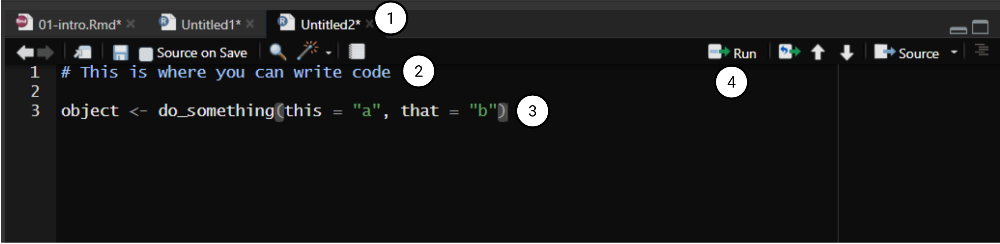
1 A very brief introduction to R
This chapter is not meant to be an exhaustive be-all end-all to how to use R. It will only go through enough to complete RPMP’s content. It will, however, introduce a couple of things that I think make for good starting habits using R - which is never a bad thing!
Naturally, if you are reading this version of the RPMP material and are interested in using R, you will need to download R and RStudio.
In general, I am a huge proponent of the ‘tidy’ workflow of data analysis. While it was originally designed for data science in mind, I think it’s a valuable model for psychological science as well:
!(https://d33wubrfki0l68.cloudfront.net/e5bf2a8f4c787a12facbc0b4191fc82bd192f4c5/4e5d2/diagrams/data-science-model.png)
The original subject was written with this workflow broadly in mind, although it wasn’t intended to follow this closely (only to bring awareness to the general idea of modelling). For a far more comprehensive and rigorous overview of how to program in R, there is no better guide than R 4 Data Science (R4DS) by Hadley Wickham: https://r4ds.had.co.nz/.
1.1 Navigating RStudio
1.1.1 The four panes
When you open RStudio, you will see four main panes on your screen. They are as follows.
The first pane, and probably the one you will spend the most time in, is the source pane. This is where you can write and edit your scripts, which are your files that contain R code. Generally, you will be working with either .R files (which contain code only) or .rmd files (which are more akin to traditional documents with chunks that execute code).
There are some main elements to the source pane that are useful to know, which have been numbered above:
- Each file you are working on will have its own tab. As you can see here, I currently have three files (including the source document for this very chapter!).
- Any lines of text with a hash (#) in front of them are comments, which enable you to write text without executing code. These are super useful for annotating your code so that others can understand what your code does.
- This is a line of code. As you can see, RStudio will colour different elements of the code in different colours.
- This button will run any code that you have selected. To use it, highlight the code you want to run and click this button.
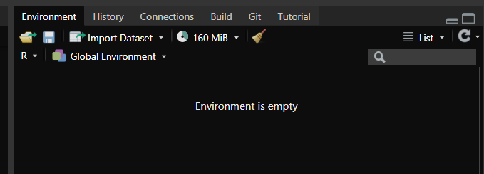
In the top right you will have the environments pane. If you create variables or load in data, you will be able to see them here.
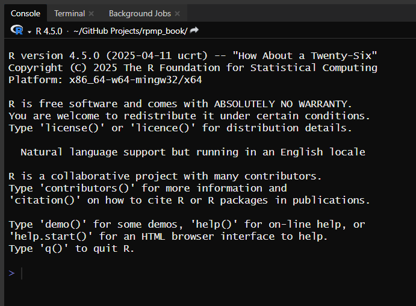
In the bottom left you will see the console. This is where all R code is actually executed, and where all output is printed. When you run code from the source pane (e.g. from a script), you will see the code being run down in the console. You can also execute code directly in the console if needed.
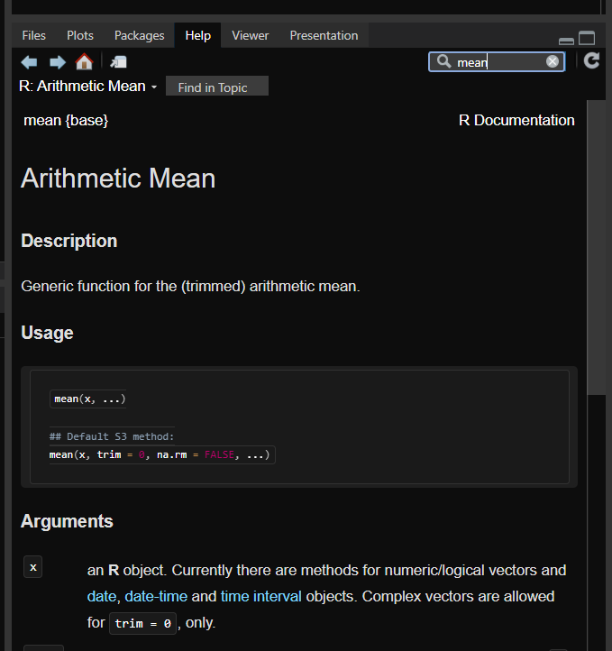
Finally, in the bottom right you will have what is usually called the output pane. You can see that there are multiple tabs in this pane as well. From left to right, the main ones you need are:
- Files: A file explorer that lets you see all your files.
- Plots: Any graphics (e.g. plots) will be shown in this tab.
- Packages: This lets you see what packages are installed. More on this in a few pages!
- Help: This pane lets you search for help pages on functions.
1.1.2 Projects
One of the great features of R is that we can easily create projects within RStudio. Projects allow us to contain everything related to a single project/line of work within one main folder.
All of the R-related files that are provided in this course come in .zip files. Once you unzip these files, you may see something like this:
|-RPMP
|---rpmp_week1.Rmd
|---w1_dataset.csv
|---RPMP.rprojHere, we have one data file (.csv), one file of code (.Rmd) and one .rproj file. Always open the .rproj file to ensure that everything is set up correctly. Once you have done that, you will see RStudio switch over to this project.
We won’t get too deep into project-oriented workflows for RPMP. However, there are several benefits to working within projects in RStudio, which we will expand on in the coming pages. One benefit that we can discuss now though is that projects simply encourage effective and easy file management: by containing everything within the one folder, you can organise all your files relevant to that project within the one group. It might be useful, for example, to create one Project for each study in your thesis (if your thesis is quantitative and you plan on using R).
Switching between projects is also easy by using the little icon at the very top right of your screen (above the environment pane):
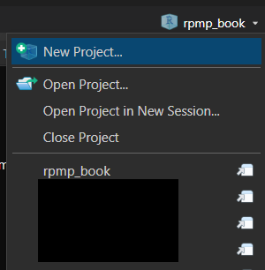
1.2 Basic syntax
1.2.1 Operators
We can do basic maths in R using the following symbols:
Addition:
+Subtraction:
-Multiplication:
*Division:
/Exponentiation:
^
# Addition and subtraction
5 + 2[1] 76 - 3[1] 3# Multiplication and division
2 * 5[1] 1024/6[1] 4R will recognise brackets and perform calculations appropriately, following BEDMAS (or PEMDAS). As you normally would with a written equation, R will perform calculations left to right.
(6 + 2) * 3/4[1] 61.2.2 Assignment and naming
When you type something in R, you almost always have the option of assigning that value to an object/variable to give it a name. In R, assigning values/strings etc. to objects is slightly different to other programming languages. Instead of using equals signs, we use a left arrow <- for assignment. For example:
# Use this
x <- 5
# This works but isn't preferred
x = 5When it comes to naming variables and the like, the easiest/most readable way for most people is to separate words using an underscore. e.g.
# this is preferred
variable_name
# this is also very common
variable.name
# sentence case is also sometimes used
VariableName
# no spaces are allowed
variable name # This will give you an error, as R will think this is two separate variables
# some heathens use camel case
variableNameTo view what has been assigned to an object, you can simply write the variable name:
# This is the variable we named earlier
x[1] 5In general, it is good practice to use variable names that are clear but concise. In other words, avoid naming your variables something like x1, x2 etc. Instead, use the name of the measure/thing the data represents directly, e.g. scale_total.
1.2.3 Variable types
Like many programming languages, R works by manipulating different types of variables. Knowing how to work with these different variables is fairly essential to using R, so here is a brief overview.
First, we have our most basic classes of variables. The first is numeric, which is as it says on the tin (i.e. it stores numbers):
var_a <- 5.25
var_a[1] 5.25A special form of a numeric variable is an integer variable, which is used for whole numbers.
var_b <- 6
var_b[1] 6The second is character, which is used for text (named strings in programming language). Strings in character variables must be enclosed with speech marks:
var_c <- "This is a string"
var_c[1] "This is a string"# "This" and "is" would be treated by R as two separate stringsFinally, we have logical variables, which can take on the form of TRUE or FALSE. TRUE and FALSE (or alternatively T or F) are special values in R that, as their names suggest, are used to indicate when a certain value is true or false.
var_d <- TRUE
var_d[1] TRUE1.3 Data structures
Of course, in R we don’t usually work with single values. We instead work with larger data structures. While there are a number of data structures in R, by and large the main one we will work with are data frames.
1.3.1 Vectors
Vectors are extremely important in R: so much so that many functions are what we call vectorised, meaning that they operate over vectors. Vectors are a data structure that provide an ordered list of values of the same type. Vectors can contain multiple numbers, strings or logical values, as an example.
To create a vector, the c() function is used. Below is a vector containing 5 numbers, thereby making it a vector of numerics:
vector_a <- c(4, 1, 6, 2, 3)
vector_a[1] 4 1 6 2 3Each value in the vector has an index, which denotes its position in the vector starting from 1. We can pull values from vectors by using square brackets, []. We give R the name of the vector, followed by the index of the value we want. Let us pull the number 1, for instance, which has an index of 2 (as it is 2nd in the vector):
vector_a[2][1] 1To subset multiple values, we can simply give a vector of indices within the square brackets. For example, let’s say we want to pull values from indices 2-4. This means that our output should be 1, 6 and 2. We can create a vector corresponding to the indices that we want (c(2, 3, 4)), and give this to the square brackets for subsetting.
vector_a[c(2, 3, 4)][1] 1 6 2But there’s a neater trick here that R allows you to do. When placing a semicolon, :, between two numbers, R will create a vector of numbers between the two numbers you give. The below command, for example, will create a vector of integers between the numbers 2 and 7:
2:7[1] 2 3 4 5 6 7We can use this to great effect by subsetting multiple values from a vector at once:
vector_a[2:4][1] 1 6 21.3.2 Data frames
Data frames are flexible, row-column structures that contain data. Data frames can essentially be thought of as several vectors joined together as columns.
R works best when data frames are in a tidy format. In a tidy format:
- Each variable is its own column
- Each observation (participant, object) is its own row
- Each value is in its own cell.

Here is an example of a data frame in tidy format. Note how each column corresponds to a different variable, or piece of data that we’re interested in. Each column is also clearly labelled, so it is clear what it represents. Each row corresponds to an observation (a single penguin, in this case). So, the first row represnts an Adelie penguin on Torgersen Island, with a bill length of 39.1mm etc etc.
library(palmerpenguins)
Attaching package: 'palmerpenguins'The following objects are masked from 'package:datasets':
penguins, penguins_rawpenguins# A tibble: 344 × 8
species island bill_length_mm bill_depth_mm flipper_length_mm body_mass_g
<fct> <fct> <dbl> <dbl> <int> <int>
1 Adelie Torgersen 39.1 18.7 181 3750
2 Adelie Torgersen 39.5 17.4 186 3800
3 Adelie Torgersen 40.3 18 195 3250
4 Adelie Torgersen NA NA NA NA
5 Adelie Torgersen 36.7 19.3 193 3450
6 Adelie Torgersen 39.3 20.6 190 3650
7 Adelie Torgersen 38.9 17.8 181 3625
8 Adelie Torgersen 39.2 19.6 195 4675
9 Adelie Torgersen 34.1 18.1 193 3475
10 Adelie Torgersen 42 20.2 190 4250
# ℹ 334 more rows
# ℹ 2 more variables: sex <fct>, year <int>For the purposes of RPMP you won’t need to create any data frames, but you will need to know how to read files in and work with them.
With data frames, there are a number of functions in base R that allow us to do certain operations. These will be super useful in a range of scenarios.
First, it helps to understand that data frames are (conceptually) like matrices, in that they have rows and columns that are indexed. We can therefore pull out bits of information by the row or column index (i.e. number) using R. To do so, we can use the format name[row, column]. name in this instance is the name of our data frame, while row and column are the row and column numbers we want respectively. For example, let us take the cell corresponding to the first row and the first column:
penguins[1,1]# A tibble: 1 × 1
species
<fct>
1 Adelie Or, the cell in row 3, column 4:
penguins[3,4]# A tibble: 1 × 1
bill_depth_mm
<dbl>
1 18We can pull out whole rows or columns by simply leaving the number blank. If we want all values in a row, we do not specify a column and vice versa. For example, let us take all of row 1 from the penguins dataset:
penguins[1,]# A tibble: 1 × 8
species island bill_length_mm bill_depth_mm flipper_length_mm body_mass_g
<fct> <fct> <dbl> <dbl> <int> <int>
1 Adelie Torgersen 39.1 18.7 181 3750
# ℹ 2 more variables: sex <fct>, year <int>Or let’s take all of the species column only, which is column 1:
penguins[,1]# A tibble: 344 × 1
species
<fct>
1 Adelie
2 Adelie
3 Adelie
4 Adelie
5 Adelie
6 Adelie
7 Adelie
8 Adelie
9 Adelie
10 Adelie
# ℹ 334 more rowsThe above operation actually can be done another way in R, and perhaps a way that is more intuitive. With data frames, we can grab individual columns using the $ operator, followed by the column’s name. This lets us grab columns by their name.
penguins$species [1] Adelie Adelie Adelie Adelie Adelie Adelie Adelie
[8] Adelie Adelie Adelie Adelie Adelie Adelie Adelie
[15] Adelie Adelie Adelie Adelie Adelie Adelie Adelie
[22] Adelie Adelie Adelie Adelie Adelie Adelie Adelie
[29] Adelie Adelie Adelie Adelie Adelie Adelie Adelie
[36] Adelie Adelie Adelie Adelie Adelie Adelie Adelie
[43] Adelie Adelie Adelie Adelie Adelie Adelie Adelie
[50] Adelie Adelie Adelie Adelie Adelie Adelie Adelie
[57] Adelie Adelie Adelie Adelie Adelie Adelie Adelie
[64] Adelie Adelie Adelie Adelie Adelie Adelie Adelie
[71] Adelie Adelie Adelie Adelie Adelie Adelie Adelie
[78] Adelie Adelie Adelie Adelie Adelie Adelie Adelie
[85] Adelie Adelie Adelie Adelie Adelie Adelie Adelie
[92] Adelie Adelie Adelie Adelie Adelie Adelie Adelie
[99] Adelie Adelie Adelie Adelie Adelie Adelie Adelie
[106] Adelie Adelie Adelie Adelie Adelie Adelie Adelie
[113] Adelie Adelie Adelie Adelie Adelie Adelie Adelie
[120] Adelie Adelie Adelie Adelie Adelie Adelie Adelie
[127] Adelie Adelie Adelie Adelie Adelie Adelie Adelie
[134] Adelie Adelie Adelie Adelie Adelie Adelie Adelie
[141] Adelie Adelie Adelie Adelie Adelie Adelie Adelie
[148] Adelie Adelie Adelie Adelie Adelie Gentoo Gentoo
[155] Gentoo Gentoo Gentoo Gentoo Gentoo Gentoo Gentoo
[162] Gentoo Gentoo Gentoo Gentoo Gentoo Gentoo Gentoo
[169] Gentoo Gentoo Gentoo Gentoo Gentoo Gentoo Gentoo
[176] Gentoo Gentoo Gentoo Gentoo Gentoo Gentoo Gentoo
[183] Gentoo Gentoo Gentoo Gentoo Gentoo Gentoo Gentoo
[190] Gentoo Gentoo Gentoo Gentoo Gentoo Gentoo Gentoo
[197] Gentoo Gentoo Gentoo Gentoo Gentoo Gentoo Gentoo
[204] Gentoo Gentoo Gentoo Gentoo Gentoo Gentoo Gentoo
[211] Gentoo Gentoo Gentoo Gentoo Gentoo Gentoo Gentoo
[218] Gentoo Gentoo Gentoo Gentoo Gentoo Gentoo Gentoo
[225] Gentoo Gentoo Gentoo Gentoo Gentoo Gentoo Gentoo
[232] Gentoo Gentoo Gentoo Gentoo Gentoo Gentoo Gentoo
[239] Gentoo Gentoo Gentoo Gentoo Gentoo Gentoo Gentoo
[246] Gentoo Gentoo Gentoo Gentoo Gentoo Gentoo Gentoo
[253] Gentoo Gentoo Gentoo Gentoo Gentoo Gentoo Gentoo
[260] Gentoo Gentoo Gentoo Gentoo Gentoo Gentoo Gentoo
[267] Gentoo Gentoo Gentoo Gentoo Gentoo Gentoo Gentoo
[274] Gentoo Gentoo Gentoo Chinstrap Chinstrap Chinstrap Chinstrap
[281] Chinstrap Chinstrap Chinstrap Chinstrap Chinstrap Chinstrap Chinstrap
[288] Chinstrap Chinstrap Chinstrap Chinstrap Chinstrap Chinstrap Chinstrap
[295] Chinstrap Chinstrap Chinstrap Chinstrap Chinstrap Chinstrap Chinstrap
[302] Chinstrap Chinstrap Chinstrap Chinstrap Chinstrap Chinstrap Chinstrap
[309] Chinstrap Chinstrap Chinstrap Chinstrap Chinstrap Chinstrap Chinstrap
[316] Chinstrap Chinstrap Chinstrap Chinstrap Chinstrap Chinstrap Chinstrap
[323] Chinstrap Chinstrap Chinstrap Chinstrap Chinstrap Chinstrap Chinstrap
[330] Chinstrap Chinstrap Chinstrap Chinstrap Chinstrap Chinstrap Chinstrap
[337] Chinstrap Chinstrap Chinstrap Chinstrap Chinstrap Chinstrap Chinstrap
[344] Chinstrap
Levels: Adelie Chinstrap GentooNote though that the output here is different; it simply returns a vector, while the [row,column] notation returns a data frame. Given that many functions in R rely on vectors, this notation is often useful.
Finally, if we want to select multiple rows or columns then we need to give vectors to the row and/or column arguments within the square brackets. This means that our semicolon notation will work here as well. For instance, let’s say we want to get the first 6 rows of the dataset:
penguins[1:6,]# A tibble: 6 × 8
species island bill_length_mm bill_depth_mm flipper_length_mm body_mass_g
<fct> <fct> <dbl> <dbl> <int> <int>
1 Adelie Torgersen 39.1 18.7 181 3750
2 Adelie Torgersen 39.5 17.4 186 3800
3 Adelie Torgersen 40.3 18 195 3250
4 Adelie Torgersen NA NA NA NA
5 Adelie Torgersen 36.7 19.3 193 3450
6 Adelie Torgersen 39.3 20.6 190 3650
# ℹ 2 more variables: sex <fct>, year <int>Or, columns 2 to 4:
penguins[,2:4]# A tibble: 344 × 3
island bill_length_mm bill_depth_mm
<fct> <dbl> <dbl>
1 Torgersen 39.1 18.7
2 Torgersen 39.5 17.4
3 Torgersen 40.3 18
4 Torgersen NA NA
5 Torgersen 36.7 19.3
6 Torgersen 39.3 20.6
7 Torgersen 38.9 17.8
8 Torgersen 39.2 19.6
9 Torgersen 34.1 18.1
10 Torgersen 42 20.2
# ℹ 334 more rows1.4 Packages and functions
1.4.1 Functions
R works primarily with functions, which take one or more inputs and return an output. Functions in R are always defined in name() format, i.e. the name of the function followed by brackets. Every function generally serves a very specific purpose, such as performing a specific calculation, manipulation of data or otherwise. Therefore, working with R requires us to use lots and lots of functions.
Most functions will have at least one, if not multiple arguments. Arguments define the options for a given function. For example, the class() function, which comes in base R, tells us the type of a variable. class() has one main argument, x - which is simply the name of the variable we want to know about. As an example, let us say we wanted to know what type of variable var_a was. We could write the following:
class(x = var_a)[1] "numeric"More simply, because class() only has one argument we can optionally write:
class(var_a)[1] "numeric"Functions may either have mandatory or optional arguments. Mandatory arguments are ones that you need to provide in order for the function to run. Optional arguments are often defaults that can be changed if needed. Many functions in R will have multiple arguments that are typically a mix of both. A key point arises here though: functions in R define arguments in specific orders. In other words, R expects you to input arguments in specific orders unless you explicitly define each argument’s value, as we did for the first instance of class().
The easiest way to find out information about what a function does and the arguments it requires is to type a question mark, ?, with the name of the function immediately afterwards. e.g.
?classA basic function is the round() function, which - as the name suggests - rounds a value you give it. round() has two arguments: x, which is the number or the name of an object we want to round, and digits, which specifies the number of digits we want to round to. x is a mandatory argument, but digits is optional and has a preset value of 0. Therefore, if we type in the following you can see what we get:
round(4.326)[1] 4If we want to round to 2dp, for instance, we would need to explicitly define the digits argument and set it to a different value.
round(4.326, digits = 2)[1] 4.331.4.2 Packages
By default, R comes with lots of functions, many of which will be used throughout this book. The beauty of R though is that its functionality is essentially limitless; its open-source nature and strong community mean that new functions and capabilities are regularly made for R. These new functions augment/extend what R is capable of doing, and are generally available in the form of packages. To provide a very simple explanation of what packages are, packages are a collection of code that provide extra functions in R. Some packages occassionally come with data too, such as the palmerpenguins package.
When you start a new R session, the first thing that you’ll want to do is load the packages that you need to use.
For now, we’ll load two packages for functions: tidyverse and rstatix. tidyverse is a huge package that contains a group of other packages designed for data manipulation, visualisation and cleaning. rstatix allows for simple statistical tests to be performed in an easy way. palmerpenguins comes with a dataset for practicing on. palmerpenguins loads a dataset named penguins that contains basic info on 3 species of penguins across 3 different islands.1
To load a package, call the library() function and enter the name of the package in brackets:
library(tidyverse)── Attaching core tidyverse packages ──────────────────────── tidyverse 2.0.0 ──
✔ dplyr 1.2.0 ✔ readr 2.2.0
✔ forcats 1.0.1 ✔ stringr 1.6.0
✔ ggplot2 4.0.3 ✔ tibble 3.3.1
✔ lubridate 1.9.5 ✔ tidyr 1.3.2
✔ purrr 1.2.1
── Conflicts ────────────────────────────────────────── tidyverse_conflicts() ──
✖ dplyr::filter() masks stats::filter()
✖ dplyr::lag() masks stats::lag()
ℹ Use the conflicted package (<http://conflicted.r-lib.org/>) to force all conflicts to become errorslibrary(rstatix)
Attaching package: 'rstatix'
The following object is masked from 'package:stats':
filterlibrary(palmerpenguins)1.4.3 The tidyverse
The tidyverse is a mega-collection of phenomenal packages that fundamentally change how to interface with R. The tidyverse provides packages for things like:
- Wrangling data
- Reading and writing data
- Making graphs
- Tidying and reshaping data
- Scraping the web
The tidyverse is probably the single most popular suite of packages for R because of the functionality it provides. All of the tidyverse packages are written in consistent syntax, generally use very easy language that has an emphasis on verbs (i.e. you’re telling R to do something) and integrate seamlessly with each other and R. The tidyverse is a philosophy of R just as much as it is a suite of functions, and is part of what makes R so powerful today.
Many aspects of the tidyverse are reliant on the pipe operator, %>%. This basically tells R to take a dataframe or output and pass it onto a function that comes directly afterwards. Any function that takes a data frame as its first argument can (theoretically) be piped, meaning that we can chain strings of functions together in one run in a readable way. See the example below:
data %>%
function_1() %>%
function_2(do = "this") %>%
function_3(avoid = "that")in the hypothetical example above, we first take data, and pass it to function 1. We then take the output of function 1 and pass that to function 2, which has the argument do = "this". Afterwards, we take the output of function 2 and pass it to function 3.
There are a number of clear benefits to the tidyverse way of doing things. These include:
- Functions are generally stated as verbs, which means that you’re always doing something with a function (and it’s clear what that something is)
- Piping avoids the cyclical hell of creating intermediate variables. Consider a non-tidyverse version of the code example above, written down below. This code is not only a bit of a pain to read, but is also clunky in that it generates several intermediate variables that aren’t all that useful (a lot of the time).
output_1 <- function_1(data)
output_2 <- function_2(output_1, do = "this")
output_3 <- function_3(output_2, avoid = "that")- Piped code is generally quite easy to read.
tidyversealso provides a consistent syntax for other packages! It provides a quasi-philosophy and style guide for developers to write their own packages to write ‘tidy’ packages.rstatixis a great example of this.
Throughout this book you will see a lot of tidyverse!
1.4.4 The here package
Another staple bit of code you will see throughout RPMP is the here package. The official vignette for here summarises what this package does:
The
herepackage enables easy file referencing by using the top-level directory of a file project to easily build file paths. This is in contrast to usingsetwd(), which is fragile and dependent on the way you order your files on your computer.
Alternatively, read the below quote from R goddess Jenny Bryan:
If the first line of your #rstats script is
setwd("C:\Users\jenny\path\that\only\I\have"), I will come into your lab and SET YOUR COMPUTER ON FIRE.
In short, here() allows us to locate files in a relative manner as opposed to an absolute one. This is super super useful for sharing your code and data with other people, and ensuring that your scripts will run no matter where they are.
Imagine you have a folder structure like this:
|-code
|-----rpmp_week1.Rmd
|-data
|-----w1_dataset.csv
|-output
|-RPMP.rprojNormally, to locate a file on a disk you would generally have to give the entire pathway to that file. That could be something like "C:\Users\Dan\Documents\Subjects\RPMP\data\w1_dataset.csv" - which is immensely unwieldy if we want to read in data - and won’t work the moment I give my script to someone else, as their folder structure could be completely different!
The alternative with here() could be as simple as:
here("data", "w1_dataset.csv")This tells R that I’m looking for something here in the data folder, specifically a file named w1_dataset.csv. As long as the relative positions are correct - i.e. the .csv file is in the data folder - R will know where to locate the file.
You will see a lot of here() in this version of the RPMP guide because as you may appreciate, there are a lot of data files stored in all manner of folders. We will talk specifically about using this function to read in data on the next page!
1.5 Loading data into R
Naturally, we cannot do any statistical analyses without reading in data. R can flexibly read in a number of data formats.
1.5.1 Setting up R projects
Before we continue, it’s worth taking a moment here to pick up on the project workflow we mentioned on the previous page. By default, R will operate out of your Documents folder on both Windows and macOS. If you make an R project, you can essentially create an instance of R that starts from the folder you place your R project in. This can be really useful for keeping all of your files related to one project in one place!
There are several guides online on how to initialise R projects, so we will not try to reinvent the wheel here. However, the basic idea is something like this:L
- Create a new R project.
- While creating the new project, either create a new folder for it or assign it to the existing folder. This will create an .rproj file in that folder.
- When working on a project, open the .rproj file. This will open RStudio in that project, which you can think of as an instance of R Studio.
- Work away!
An example basic project structure might look like this:
|-Documents
|---RPMP (this is the folder for the project)
|-----RPMP.rprojThe .rproj file will sit within the folder you specify, meaning that all your files and filepaths will be indexed relative to that folder. For here, this means that you will now start from the RPMP folder, and not Documents. As we will touch on below, this is really useful for easily finding files!
At a basic level, we recommend a simple file structure like this:
|-Documents
|---RPMP (this is the folder for the project)
|-----RPMP.rproj
|-----code
|-----data
|-----outputThe code folder in your project is your place for storing code, the data folder is for storing data and output is useful for saving any outputs you generate.
1.5.2 csv files
By and large, the most common file format for R is the .csv file format. .csv stands for comma separated values, and is basically a file format that stores your data in text form, separated by commas. The commas indicate where your data’s columns are, and thus
The basic structure of a .csv file is identical to that of a regular dataframe in R. The first column should typically indicate the column name/heading, and each row should contain values.
.csvs can be easily created using Excel. If you have a dataset in Excel format, you can export an Excel spreadsheet as a .csv file by going File -> Export. However, as .csv files are stored as plain text, they will not retain any special formatting that you might be accustomed to in an Excel spreadsheet. They will only store data in plain text.
To read a .csv file in R, the read_csv() function from tidyverse or read.csv() from base R will work equally as well. Both functions require you to specify where your .csv file can be found.
dataset <- read_csv("Insert your file path here.csv")1.5.3 Text files
R can also read in plain text files in .txt format. This is very similar to the .csv format, in that your text file will typically have column headers in the first row, each row with one participant/observation’s values, and each column separated by spaces.
tidyverse provides a function called read_tsv() to read in these files.
dataset <- read_tsv("Insert your file path here.txt")If, however, you are working with a file that has a different type of character between each column - for example, a slash (/) - then you can use the function read_delim(), which is a more generic form of the two above. With this function, you must specify the delimiter - i.e. what separates the columns in the files. This can be done using the delim = argument.
dataset <- read_delim("Insert your file path here.txt", delim = "/")1.5.4 SPSS files
SPSS is still a popular program of choice in psychological sciences, and so a lot of the datasets you may come across may be in SPSS format. SPSS data files are in .sav format.
Base R cannot natively read these files. However, the haven package provides a function called read_spss() that will read these files in for you.
library(haven)
dataset <- read_spss("Insert your file path here.sav")1.5.5 Using here to read data
On the previous page, we talked about the here package, and how it enables easy pathing. here becomes really useful for reading in data, and it becomes even easier if you have an R project set up.
If you have a project structure like the example on the previous page:
|-RPMP
|---code
|-----rpmp_week1.Rmd
|---data
|-----w1_dataset.csv
|---output
|---RPMP.rprojThen you can use here() in conjunction with any of the data-reading functions above. As the data-reading functions primarily only need a filepath, you can use here() to create that filepath and point to the right place.
Here is an example:
dataset <- read_csv(here("data", "w1_dataset.csv"))The here() call tells R to look in the data folder, and then look for w1_dataset.csv. Remember, in an R project, every file is indexed relative to the project folder. This means that we don’t need to faff around with finding out where our RPMP folder is on our computer, because essentially that’s where we start! The filepath to this file will then be used as the argument for read_csv().
Even if you are not using a project structure (although we highly recommend you do), you can still use here() - so long as the file can be located relative to your current working directory, which can be obtained using setwd(). However, it’s usually worth saving yourself the hassle and creating a new R project for substantive bits of work, and saving files as folders within that project’s folder.
1.6 Wrangling data with dplyr and others
dplyr is a package within the tidyverse for manipulating and wrangling data. dplyr is one of the most popular packages on R because it provides a suite of functions that are fairly essential to manipulating and working with data. Below is a brief overview of some of these functions, applied to the penguins dataset.
1.6.1 Selecting columns with select()
select() lets you select the columns you want from a dataset. Simply specify the columns that you want by name. Below we take the species and island columns from the penguins dataset:
penguins %>%
select(species, island)# A tibble: 344 × 2
species island
<fct> <fct>
1 Adelie Torgersen
2 Adelie Torgersen
3 Adelie Torgersen
4 Adelie Torgersen
5 Adelie Torgersen
6 Adelie Torgersen
7 Adelie Torgersen
8 Adelie Torgersen
9 Adelie Torgersen
10 Adelie Torgersen
# ℹ 334 more rowsYou can select columns via a number of ways:
- Simply by name, e.g.
select(species, island) - By their index or column number, e.g.
select(1, 2)select(1:4)will select columns 1 to 4select(-1)will select the last column
- By certain operator functions, such as
starts_with()andends_with(), e.g.ends_with("mm")will select all columns that end with “mm”
Combinations of the above also work. Removing columns is simply done by adding a minus sign - in front of the arguments for select, and are compatible with all of the options above.
1.6.2 Filtering rows with filter()
filter() selects the rows that you want based on a certain condition. Here, we specify the column that want to filter by and state the condition (== means equals to). We can filter on multiple conditions; for example, filtering Adelie penguins by the year 2007:
penguins %>%
filter(year == 2007, species == "Adelie")# A tibble: 50 × 8
species island bill_length_mm bill_depth_mm flipper_length_mm body_mass_g
<fct> <fct> <dbl> <dbl> <int> <int>
1 Adelie Torgersen 39.1 18.7 181 3750
2 Adelie Torgersen 39.5 17.4 186 3800
3 Adelie Torgersen 40.3 18 195 3250
4 Adelie Torgersen NA NA NA NA
5 Adelie Torgersen 36.7 19.3 193 3450
6 Adelie Torgersen 39.3 20.6 190 3650
7 Adelie Torgersen 38.9 17.8 181 3625
8 Adelie Torgersen 39.2 19.6 195 4675
9 Adelie Torgersen 34.1 18.1 193 3475
10 Adelie Torgersen 42 20.2 190 4250
# ℹ 40 more rows
# ℹ 2 more variables: sex <fct>, year <int>You can also choose to filter out rows based on a condition by adding an exclamation mark in front of the column name.
penguins %>%
filter(!year == 2007)# A tibble: 234 × 8
species island bill_length_mm bill_depth_mm flipper_length_mm body_mass_g
<fct> <fct> <dbl> <dbl> <int> <int>
1 Adelie Biscoe 39.6 17.7 186 3500
2 Adelie Biscoe 40.1 18.9 188 4300
3 Adelie Biscoe 35 17.9 190 3450
4 Adelie Biscoe 42 19.5 200 4050
5 Adelie Biscoe 34.5 18.1 187 2900
6 Adelie Biscoe 41.4 18.6 191 3700
7 Adelie Biscoe 39 17.5 186 3550
8 Adelie Biscoe 40.6 18.8 193 3800
9 Adelie Biscoe 36.5 16.6 181 2850
10 Adelie Biscoe 37.6 19.1 194 3750
# ℹ 224 more rows
# ℹ 2 more variables: sex <fct>, year <int>drop_na() is another useful starting function that simply removes all rows with NA/empty cells. If you enter it as is then it will clean the entire dataset; if you specify a column then it will remove all rows with NAs in that column. Below is an example of a pipe using these functions - going from selecting columns to filtering rows and finally cleaning up the empty cells.
penguins %>%
select(species, body_mass_g, year) %>%
filter(year == 2009) %>%
drop_na()# A tibble: 119 × 3
species body_mass_g year
<fct> <int> <int>
1 Adelie 3725 2009
2 Adelie 4725 2009
3 Adelie 3075 2009
4 Adelie 4250 2009
5 Adelie 2925 2009
6 Adelie 3550 2009
7 Adelie 3750 2009
8 Adelie 3900 2009
9 Adelie 3175 2009
10 Adelie 4775 2009
# ℹ 109 more rows1.6.3 Creating new columns with mutate()
mutate() is a function that lets you create new columns. This can be extremely useful for operations like recoding variables and transforming them. The nice thing about mutate() is that you can do all manner of operations without touching your original data.
The basic workflow of mutate() looks like this:
data %>%
mutate(
new_column_1 = a_function(...),
new_column_2 = another_function(...)
)This example code would create two new columns, named new_column_1 and new_column_2, with their respective values being whatever the functions were. For example, in the penguins dataset we have a variable called body_mass_g, which is the body mass of each penguin in grams. If we wanted to convert this to kilograms, we would need to divide each penguin’s value on this variable by 1000. mutate() makes this a piece of cake. Let’s also chain a select() command to only show the following variables: species, island, body_mass_g and sex.
penguins %>%
select(species, island, body_mass_g, sex) %>%
mutate(body_mass_kg = body_mass_g/1000)# A tibble: 344 × 5
species island body_mass_g sex body_mass_kg
<fct> <fct> <int> <fct> <dbl>
1 Adelie Torgersen 3750 male 3.75
2 Adelie Torgersen 3800 female 3.8
3 Adelie Torgersen 3250 female 3.25
4 Adelie Torgersen NA <NA> NA
5 Adelie Torgersen 3450 female 3.45
6 Adelie Torgersen 3650 male 3.65
7 Adelie Torgersen 3625 female 3.62
8 Adelie Torgersen 4675 male 4.68
9 Adelie Torgersen 3475 <NA> 3.48
10 Adelie Torgersen 4250 <NA> 4.25
# ℹ 334 more rowsYou can see now that we have a new column called body_mass_kg that has our new transformed variable.
mutate() can also take functions (and likely will make up the majority of your use of it). For example, let’s say that we want to make a variable that takes the natural logarithm of bill length (for whatever reason). We could do this as follows using the log() function within our mutate() call:
penguins %>%
select(species, island, bill_length_mm, bill_depth_mm) %>%
mutate(bill_length_log = log(bill_length_mm))# A tibble: 344 × 5
species island bill_length_mm bill_depth_mm bill_length_log
<fct> <fct> <dbl> <dbl> <dbl>
1 Adelie Torgersen 39.1 18.7 3.67
2 Adelie Torgersen 39.5 17.4 3.68
3 Adelie Torgersen 40.3 18 3.70
4 Adelie Torgersen NA NA NA
5 Adelie Torgersen 36.7 19.3 3.60
6 Adelie Torgersen 39.3 20.6 3.67
7 Adelie Torgersen 38.9 17.8 3.66
8 Adelie Torgersen 39.2 19.6 3.67
9 Adelie Torgersen 34.1 18.1 3.53
10 Adelie Torgersen 42 20.2 3.74
# ℹ 334 more rows1.6.4 Summarising data with summarise() and group_by()
Finally, sometimes we will want to summarise data - for example, to calculate basic features such as descriptives or for plotting. To do that, we can use the function summarise() (or summarize() for American users).
summarise() works very similarly to mutate().
data %>%
summarise(
summary_1 = a_function(...),
summary_2 = another_function(...)
)The difference is that while mutate() retains the features of your data, summarise() will instead collapse it. To illustrate, let’s say we want to calculate a) how many penguins there are (with the function n()) and b) the mean body mass (with the mean() function).
penguins %>%
summarise(
n_penguins = n(),
mean_mass = mean(body_mass_g, na.rm = TRUE)
)# A tibble: 1 × 2
n_penguins mean_mass
<int> <dbl>
1 344 4202.This is… good and all, but consider what we’ve just done. We’ve just calculated the number of penguins and the mean body mass across the entire dataset. However, that may not necessarily be meaningful, particularly in this instance where we have meaningful groups within the data. For example, the above mean collapses across years, which may not be appropriate.
Enter in another function called group_by(). As the name implies, group_by() will perform operations per a grouping variable that you specify. group_by() works especially well with summarise, because the idea is something like this:
data %>%
group_by(variable) %>% # Tell R to group the subsequent output by this variable
summarise(
summary_1 = a_function(...),
summary_2 = another_function(...)
) %>%
ungroup() # Tell R grouping is no longer neededLet’s put this into practice by calculating the n and mean per year. Notice how the output now calculates n and the mean body mass per year, which is much more informative!
penguins %>%
group_by(year) %>%
summarise(
n_penguins = n(),
mean_mass = mean(body_mass_g, na.rm = TRUE)
) %>%
ungroup()# A tibble: 3 × 3
year n_penguins mean_mass
<int> <int> <dbl>
1 2007 110 4125.
2 2008 114 4267.
3 2009 120 4210.Naturally, group_by() can group using multiple variables. This is easy to do so as well
penguins %>%
group_by(year, island) %>%
summarise(
n_penguins = n(),
mean_mass = mean(body_mass_g, na.rm = TRUE)
) %>%
ungroup()`summarise()` has regrouped the output.
ℹ Summaries were computed grouped by year and island.
ℹ Output is grouped by year.
ℹ Use `summarise(.groups = "drop_last")` to silence this message.
ℹ Use `summarise(.by = c(year, island))` for per-operation grouping
(`?dplyr::dplyr_by`) instead.# A tibble: 9 × 4
year island n_penguins mean_mass
<int> <fct> <int> <dbl>
1 2007 Biscoe 44 4741.
2 2007 Dream 46 3684.
3 2007 Torgersen 20 3763.
4 2008 Biscoe 64 4628.
5 2008 Dream 34 3779.
6 2008 Torgersen 16 3856.
7 2009 Biscoe 60 4793.
8 2009 Dream 44 3691.
9 2009 Torgersen 16 3489.Suddenly this is much more informative - we can now do calculations/operations per year and island, which provides a lot more nuance.
1.6.5 Some other handy tidyverse functions
As stated at the start of this chapter, this book will only cover enough R functions to provide you with an understanding of what goes on in this book and how. Nonetheless, there are so many tidyverse functions out there that are worth exploring and knowing about. Below is a brief list of some other functions from dplyr you may wish to keep in mind. To find out what a given function does in more detail, you just need to type ?function into the R console to search for its documentation (or ??x to do a broad search).
Note that all of these are dplyr functions, so need to be piped from a dataset like usual.
arrange()will sort your rows by a variable you specify. For example, if you wanted to sort the penguins dataset by island, you could usearrange(island)(orarrange(desc(island))for descending order).distinct()will give you all unique values in a given column.distinct(island), for instance, will give you each unique island name.rename()will let you rename columns.relocate()will let you rearrange the column order.- The
slice()set of functions will subset rows, but mainly based on positions (e.g. first, last) rather than conditions.
1.7 Making graphs with ggplot2
1.7.1 Building the plot
ggplot2 (henceforth referred to as ggplot) is the tidyverse package for plotting and visualising data. It is an immensely powerful and flexible way of graphing data in R, and is basically the de facto means of creating visualisations for R users.2
The ‘gg’ in the name ggplot stands for grammar of graphics. The idea is that a graph is built by layering different components of a graph (the graphics) in a structured way (the grammar). The idea was first put forward by Leland Wilkinson, and looks something like this:
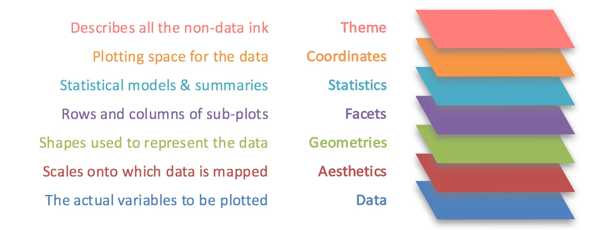
A cheatsheet for ggplot can be found here.
To start a plot, we first call the ggplot() function. Here, we specify three of the main features of our plot - the dataset that we want to use, the x axis and the y axis. the x and y axes are wrapped within the aes() function, which defines our aesthetics. Here, we simply say which columns of our dataset should go on the x and y axes. Using the penguins dataset, we can start to visualise a scatter plot between bill length and bill depth like this:
ggplot(data = penguins, aes(x = bill_length_mm, y = bill_depth_mm))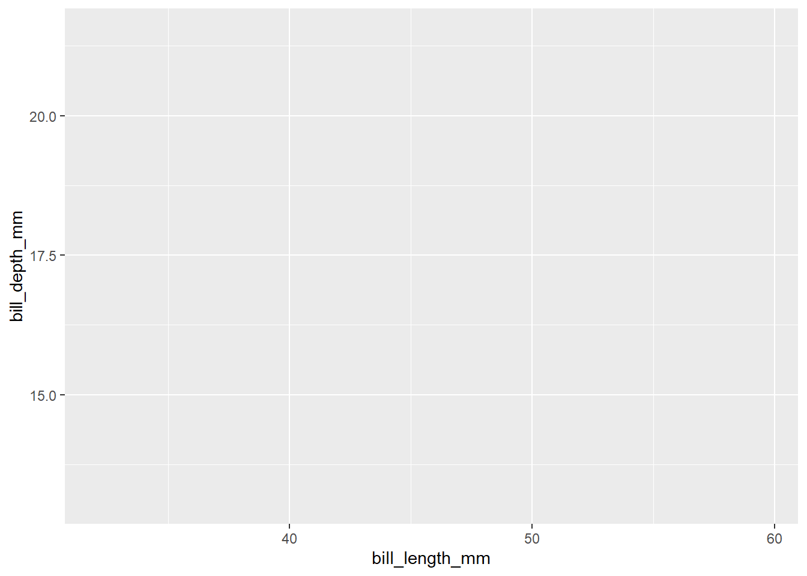
However, notice that the plot is empty. This is because we’ve only specified the first two layers of our graph: the data and the aesthetics. We haven’t defined any geoms, or actual plotting methods, in our plot.
1.7.2 Geoms
Geoms (short for geometries) define how data is plotted. If ggplot() provides the basic canvas for the graph (i.e. what to plot), geoms are what create the graph (i.e. how it is plotted). Different graph types are defined using geoms. As per the diagram of the grammar of graphics above, we add (literally, using +) additional layers to our base ggplot() call in order to build our graph.
Refer to the cheatsheet for all of the possible geoms. For now, we will stick to some basics.
A scatter plot can be specified by adding geom_point(). This requires that your x and y variables are continuous:
ggplot(data = penguins, aes(x = bill_length_mm, y = bill_depth_mm)) +
geom_point()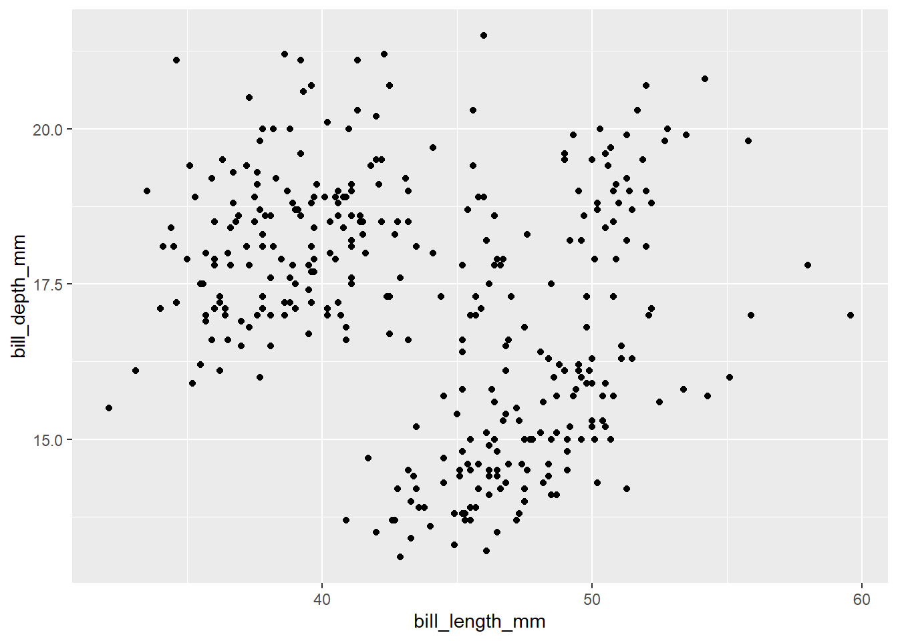
geom_smooth() will add a line of best fit to a scatterplot. You can add this as another geom layer by adding geom_smooth(method = "lm"). Specifying the method is important because by default, geom_smooth() will probably fit LOESS curves (local polynomial regressions). Note that this function should be added after using geom_point().
By default, the line will also have standard error bands around it. You can turn this off by also specifying se = FALSE in the geom_smooth() call.
ggplot(data = penguins, aes(x = bill_length_mm, y = bill_depth_mm)) +
geom_point() +
geom_smooth(method = "lm", se = FALSE)`geom_smooth()` using formula = 'y ~ x'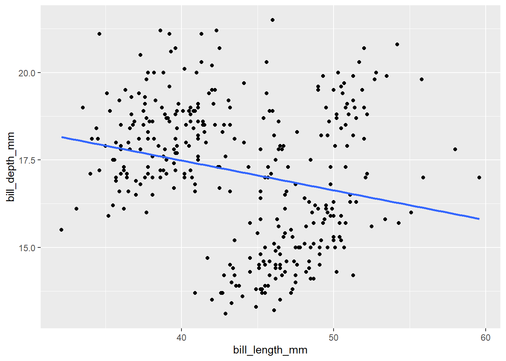
geom_boxplot() will create boxplots. For this geom to work, a categorical variable must be on the x axis and a continuous variable must be on the y axis. An example is below, with species on the x axis and body mass on the y:
ggplot(data = penguins, aes(x = species, y = body_mass_g)) +
geom_boxplot()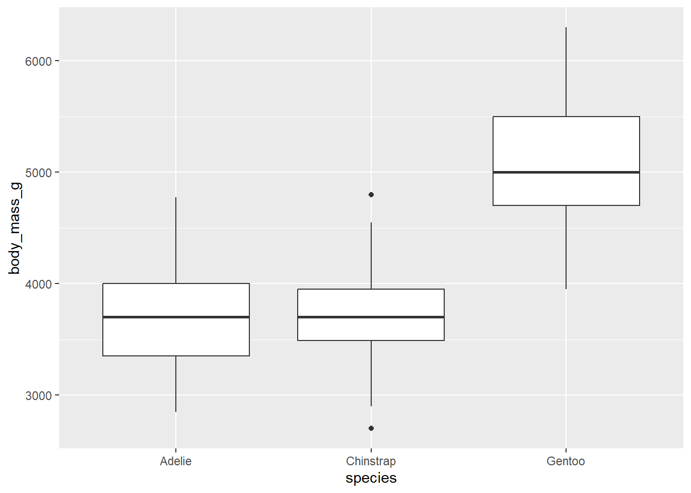
geom_violin() plots violin plots, which is a variant of the boxplot that also plots the distribution.
ggplot(data = penguins, aes(x = species, y = body_mass_g)) +
geom_violin()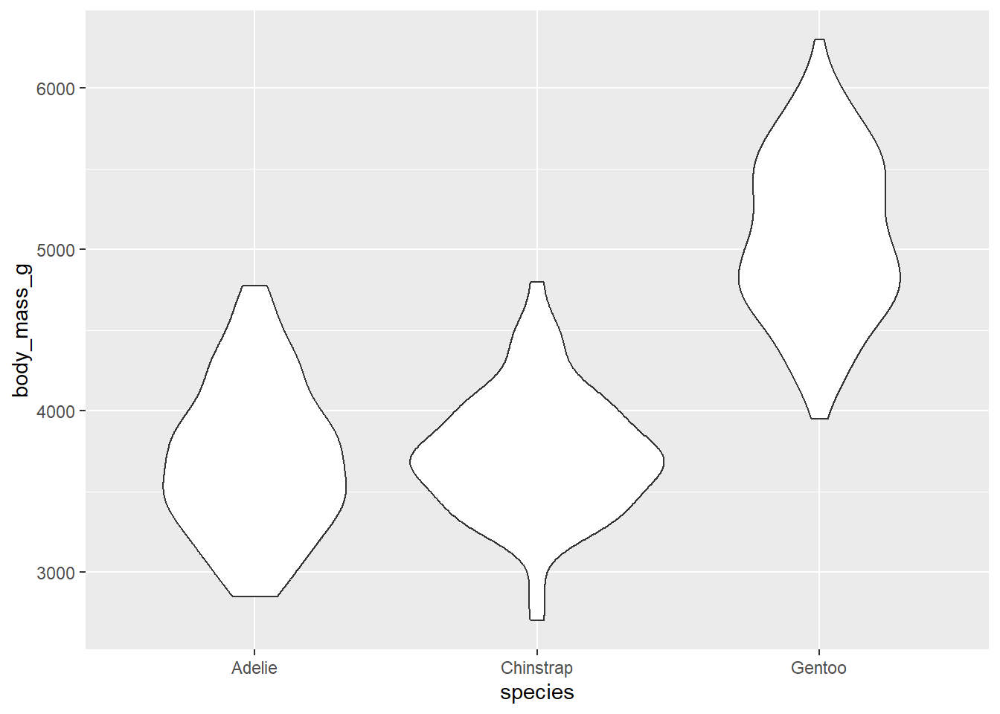
geom_bar() and geom_col() will both create bar plots, but their usage is slightly different. geom_bar() is best used if you want to plot the number of items in each category. geom_col() is best used to plot means or similar statistics.
penguins %>%
group_by(species) %>%
summarise(
mean_mass = mean(body_mass_g, na.rm = TRUE)
) %>%
ggplot(aes(x = species, y = mean_mass)) +
geom_col()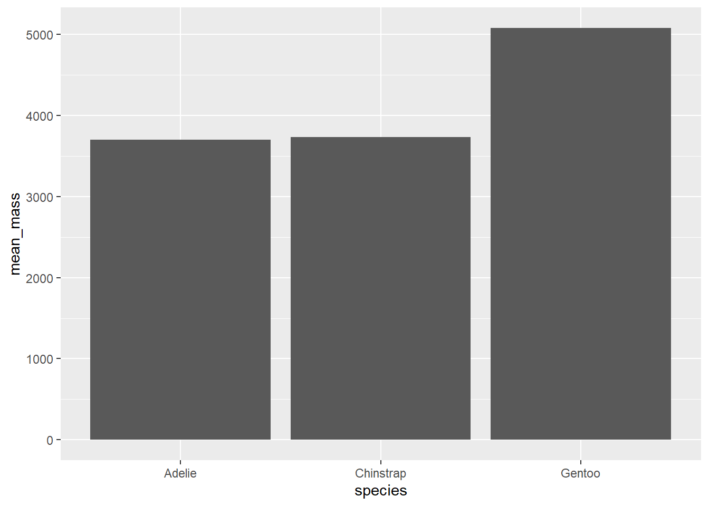
geom_histogram() will plot a histogram, which is useful for visualising distributions. For this, you only need to provide one continuous variable on the x-axis. geom_density() will plot the same information but using a smoothed line instead of bins.
ggplot(data = penguins, aes(x = body_mass_g)) +
geom_histogram()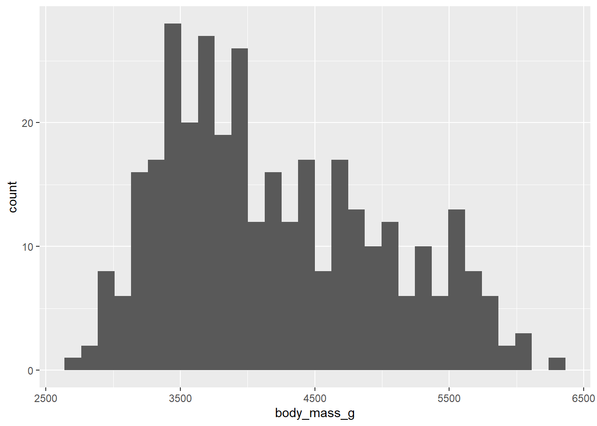
ggplot(data = penguins, aes(x = body_mass_g)) +
geom_density()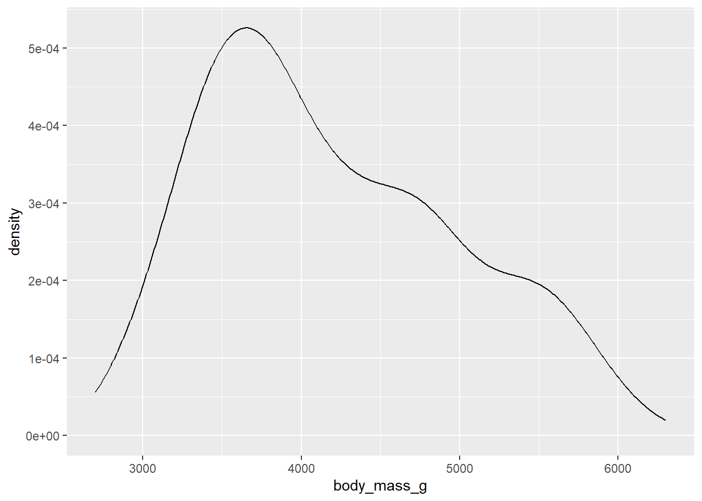
1.7.3 Making the graph look better
This is all well and good, and we already have workable basic graphs using ggplot. From here, we can change many things by adding or modifying our existing layers to our ggplot. There are so many options available here, but here we’ll only focus on some basic considerations.
An important aspect of data visualisation is a good use of colour. Colours should be used in both an informative and an aesthetically appealing way. A particularly common but effective use of colour is to use different colours to denote different groups in a plot.
ggplot provides two mechanisms within aesthetics for controlling colour. Both must typically be included in the aes() part of ggplot().
colourcontrols the colouring of points and lines. For graphs with shapes, such as boxplots and violin plots, this argument will control the colour of the border.fillcontrols the colouring of anything over an area, such as bar plots, histograms and density/violin plots.
We can tell gggplot to colour in aspects of our graph based on another variable in the dataset we are using. For example, if we want to colour a scatterplot between two vraiables by sex (which is a column in the penguins data), we can do so by specifiyng colour = sex in our aes() function.
ggplot(data = penguins, aes(x = bill_length_mm, y = bill_depth_mm, colour = sex)) +
geom_point()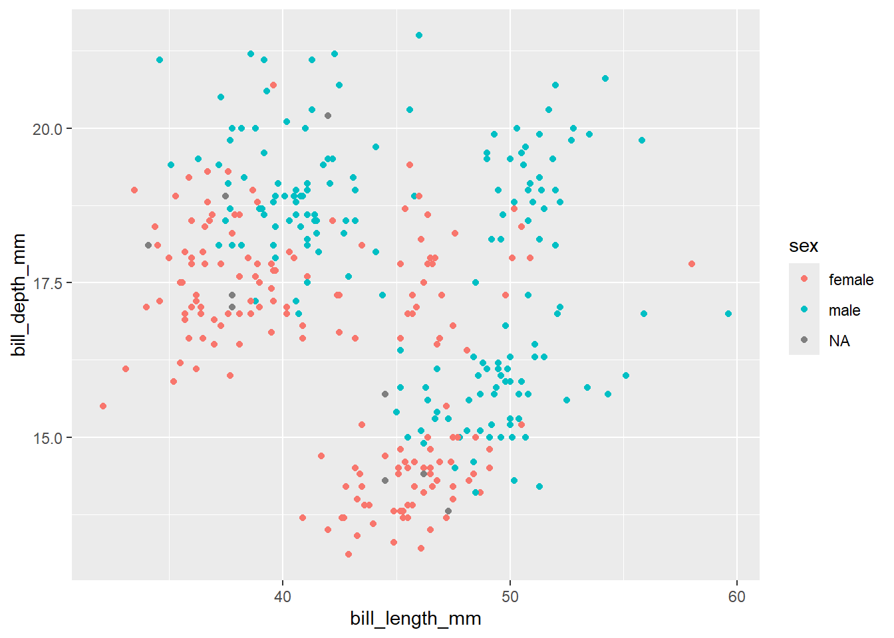
Many graphs allow for control of both colour and fill. In these instances, as noted above, fill controls the colour within the shape while colour controls the colour of the shape’s edges. For example, here is a density plot that specifies both colour and fill to be controlled by the variable island. This has the effect of making both the borders and the area within the shape the same colour.
ggplot(data = penguins, aes(x = body_mass_g, fill = island, colour = island)) +
geom_density()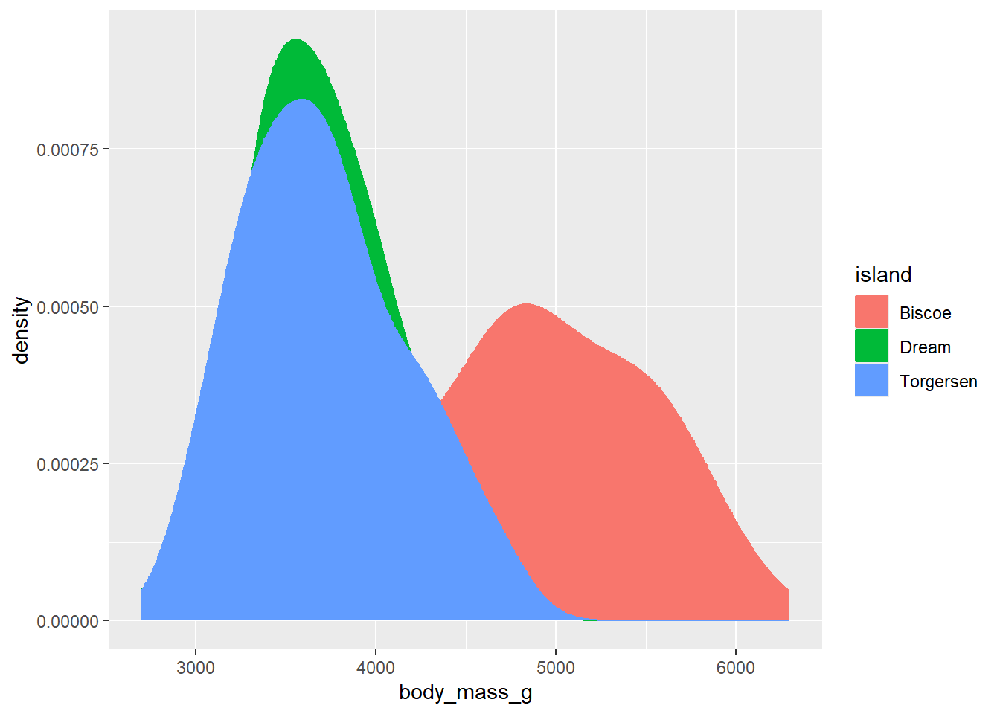
Now, this is all well and good but in this particular instance the overlapping of curves means that we can’t actually see what is going on very well. The data points from Torgersen island, for instance, almost completely overlap with the data points from Dream Island. One way to get past this is to specify another aesthetic called alpha, which sets the transparency of the fill.
As we typically only want to change the transparency of one type of geom in a plot, the best place to include an alpha argument is within the geom call itself (in this case, within geom_density()). alpha can range from 0 - 1, where 1 means an object is 100% opaque (i.e. 0% transparent) and 0 means 0% opaqueness (100% transparency). Here, we use alpha = 0.5 to set the fill to be 50% transparent:
ggplot(data = penguins, aes(x = body_mass_g, fill = island, colour = island)) +
geom_density(alpha = 0.5)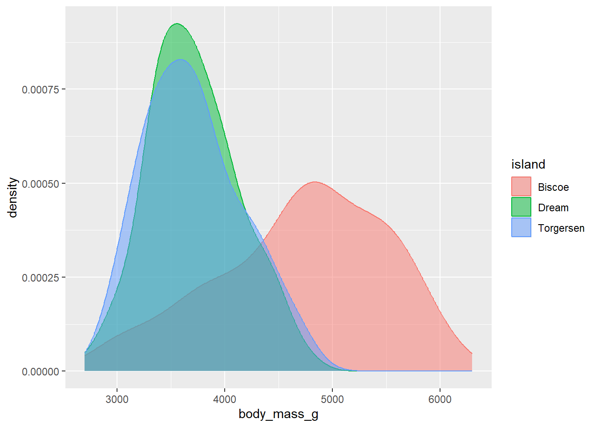
Now we can see the outlines of each density curve more clearly! This is great.
ggplot also supports the manual specification of colours. R by default comes with a bunch of strings that are recognised as colours during graphing, such as "black", "blue" and "red". These can be used to manually set either the colour or the fill of a geom. To use these, you can instead use colour/fill within the geom like so:
ggplot(data = penguins, aes(x = species, y = body_mass_g)) +
geom_boxplot(colour = "blue")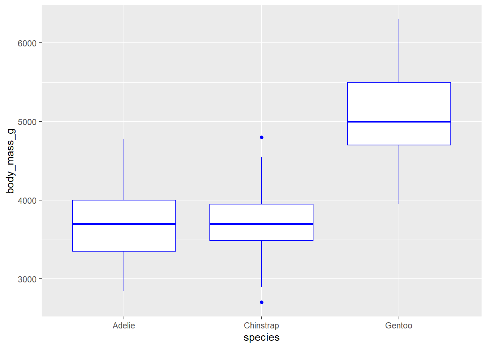
You can also provide hexadecimal strings (e.g. “white” corresponds to "#FFFFFF"). See the Appendix for a full list of the basic palettes in R.
Every graph needs good axis titles. By default, ggplot will use variable names as axis labels, which often aren’t very informative by default. We can change this by adding labs(), which is a simple way of specifying x and y labels:
ggplot(data = penguins, aes(x = bill_length_mm, y = bill_depth_mm)) +
geom_point() +
labs(x = "Bill length (mm)", y = "Bill depth (mm)") 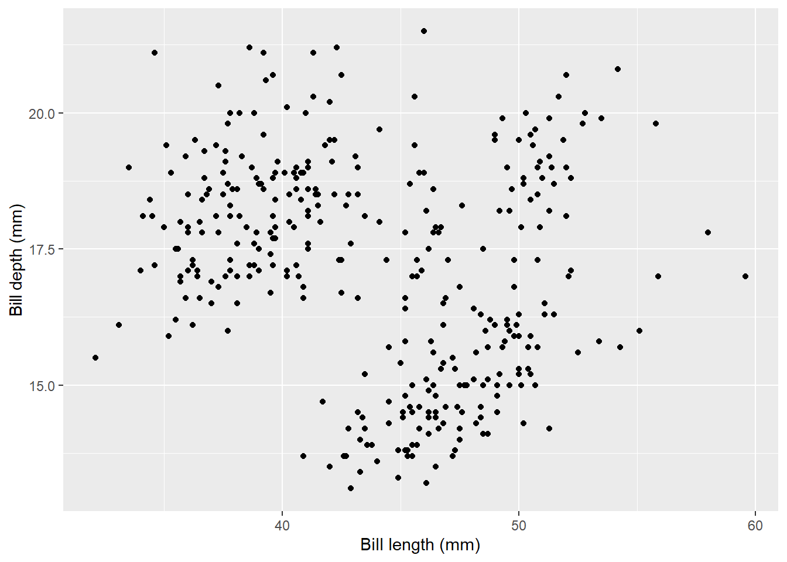
Finally, if you want to split plots by a certain variable, add facet_wrap() to your call. You need to specify what variable/column you want to split by, with a tilde in front. For example, if we wanted to split the scatter plot by year:
ggplot(data = penguins, aes(x = bill_length_mm, y = bill_depth_mm, colour = sex)) + geom_point() +
labs(x = "Bill length (mm)", y = "Bill depth (mm)") +
facet_wrap(~year)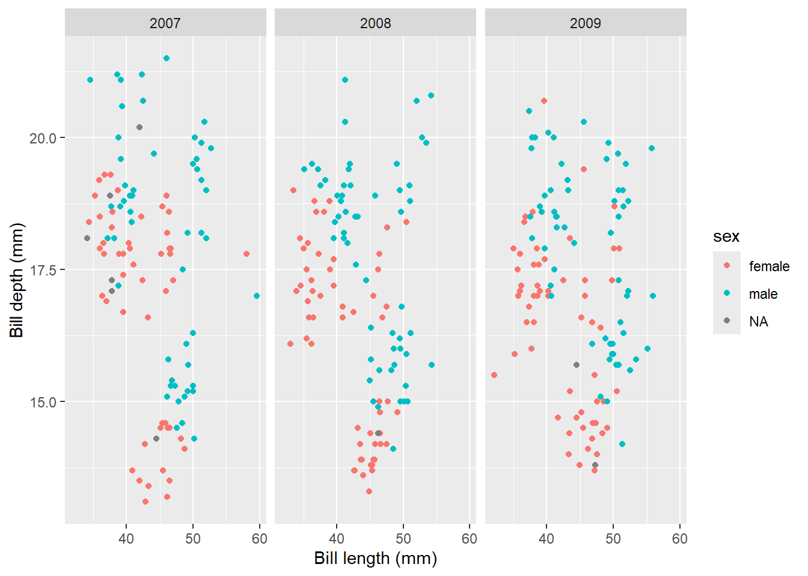
You can see that the graph now creates one graph per year, which can be immensely useful for visualising data points between groups.
From here, there are so many things you can do with ggplot - and it helps to get creative!
In 2025, this dataset was added to the
datasetspackage that comes with base R - meaning that thepenguinsdata is now part of base R (yay!). This means that in newer versions of R, you can also access this dataset by simply usingdata(penguins)without needing to load thepalmerpenguinspackage first. I haven’t changed this though for demonstration reasons.↩︎Almost all of the graphs in RPMP (in fact, I think it actually is 100%) were made using
ggplot2.↩︎